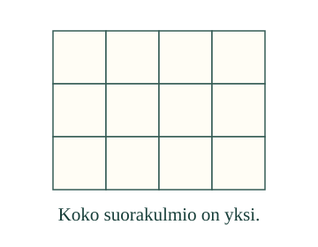
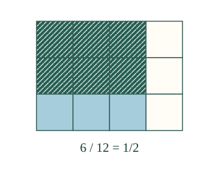
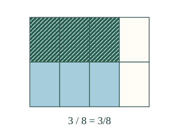

<link rel="stylesheet" href="lesson.css">
<section data-fraction-lesson>

<section data-teaching-step="1" data-lesson-role="teaching-step">
<div class="fraction-intro"><div><h2>Ota osa osasta</h2><p>Aava värittää 3/4 taulusta. Loikka ottaa siitä 2/3. Kuinka paljon koko taulusta?</p></div></div>
<button type="button" data-fraction-step>Valitse ensimmäinen osa</button><div data-fraction-image></div><p data-fraction-readout aria-live="polite">Kokonainen on jaettu 12 yhtä suureen ruutuun.</p>
</section>


<section data-teaching-step="2" data-lesson-role="teaching-step">
<details data-lesson-role="teaching-step"><summary>Toista vaiheet tai vaihda murtolukuja</summary><button type="button" data-fraction-play>Toista vaiheet</button><button type="button" data-fraction-stop>Pysäytä</button><button type="button" data-fraction-rewind>Alkuun</button><label>Malli<select data-fraction-model><option value="patch">2/3 osasta 3/4</option><option value="half">Puolet osasta 3/4</option><option value="zero">Nolla kertaa 2/3</option><option value="whole">Yksi kertaa 3/4</option></select></label></details>
</section>

<nav aria-label="Oppitunnin kohdat" data-lesson-role="metadata"><a href="#tulo-miksi">Miksi kertolasku?</a> · <a href="#tulo-kokeile">Kokeile itse</a> · <a href="#tulo-lopuksi">Lopuksi</a></nav>

<section id="tulo-miksi"><section data-teaching-step="3-1" data-lesson-role="teaching-step"><h3>Sama kokonainen pysyy mukana</h3><p>Koko taulu on yksi. Ensin valitaan kolme neljästä sarakkeesta: <strong>3/4</strong>. Siitä valitaan kaksi kolmesta rivistä: <strong>2/3</strong>. Lopuksi valittuja ruutuja on 2 × 3 = 6. Koko taulussa on 3 × 4 = 12 ruutua. Tulos on <strong>6/12 = 1/2</strong> koko taulusta, ei 2/3 koko taulusta.</p><figure data-lesson-role="worked-example"></figure>
<p>Merkintä <strong>2/3 × 3/4</strong> tarkoittaa tässä kahta kolmasosaa kolmesta neljäsosasta.</p></section>
<section data-teaching-step="3-2" data-lesson-role="teaching-step"><h3>Puolet kolmesta neljäsosasta</h3><p>Valitse toinen malli. 1/2 × 3/4 = 3/8. Jokainen neljäsosa jaetaan kahteen yhtä suureen osaan, joten koko taulussa on kahdeksan osaa. Niistä valitaan kolme.</p><figure data-lesson-role="worked-example"></figure></section>
<section data-teaching-step="3-3" data-lesson-role="question"><p data-lesson-role="question"><strong>Ennusta:</strong> voiko kahden murtoluvun kertolasku pienentää lukua?</p><details data-lesson-role="answer"><summary>Tarkista ajatus</summary><p>Kyllä. Puolet luvusta 3/4 on 3/8. Kertominen luvulla, joka on nollan ja yhden välissä, ottaa osan. Kertominen yhdellä säilyttää luvun. Kertominen nollalla antaa nollan.</p></details></section>
<section data-teaching-step="3-4" data-lesson-role="teaching-step"><h3>Yleinen laskusääntö</h3><p><strong>a/b × c/d = (a × c)/(b × d)</strong>, kun nimittäjät eivät ole nollia. Osoittajat kerrotaan keskenään ja nimittäjät keskenään. Niitä ei lasketa yhteen, eikä murtolukuja tarvitse ensin laventaa samannimisiksi.</p><p>Esimerkiksi 3/2 × 4/3 = 12/6 = 2. Murtoluku voi olla suurempi kuin yksi, ja tulo voi kasvaa. Ruudukon pienemmät kuin yksi -mallit eivät siis kuvaa jokaista mahdollista kertolaskua.</p></section></section>


<section data-teaching-step="4" data-lesson-role="teaching-step">
<section id="tulo-kokeile"><h3>Kokeile uutta tuloa</h3><label>Tehtävä<select data-fraction-exercise><option value="calc">Kaksi murtolukua</option><option value="half">Puolet osasta</option><option value="large">Suurempi kuin yksi</option><option value="zero">Nolla mukana</option><option value="length">Narun pituus</option></select></label><p data-fraction-prompt>Laske 3/5 × 2/3.</p><label>Tulos<input data-fraction-answer inputmode="text" placeholder="esim. 3/8 tai 1"></label><p>Murtoluku, kokonaisluku tai tarkka desimaaliluku käy. Supistamaton samanarvoinen murtoluku hyväksytään.</p><button type="button" data-fraction-check>Tarkista tulo</button><p data-fraction-feedback aria-live="polite">Tarkista, kun olet valmis.</p><details data-lesson-role="hint"><summary>Tarvitsen vihjeen</summary><p>Kerro yläluvut keskenään ja alaluvut keskenään. Pidä sama kokonainen mielessä. Narun tehtävässä tulos kertoo osan metristä, ei osan ruudun pinta-alasta.</p></details></section>
</section>


<section data-teaching-step="5" data-lesson-role="teaching-step">
<details data-lesson-role="teaching-step"><summary>Lisäpohdinta</summary><p>Saako saman tulon laskusta 3/4 × 2/3 kuin laskusta 2/3 × 3/4? Tulos on sama, vaikka ensin valittu osa vaihtuu. Piirrä molemmat niin, että kokonainen on samankokoinen.</p></details>
</section>

<details data-lesson-role="teacher-note"><summary>Opettajalle ja ilman ruutua</summary><p>Vuosiluokat 7–9. Vaaditut M-FRAC-15 ja M-FRAC-03 säilyvät. Osa osasta -malli olettaa tasakokoiset osat ja saman kokonaisen. Supistaminen näytetään samanarvoisuutena, ei hyväksynnän lisävaatimuksena. Pinta-alamallissa kertoimet ovat nollan ja yhden väliltä; laskusääntöä sovelletaan myös epämurtolukuihin. Merkkisäännöt eivät ole tämän tunnin opetustavoite.</p><p>Paperilla: taita sama suorakulmio neljään sarakkeeseen ja kolmeen riviin. Rajaa ensin kolme saraketta ja ota vain tästä osasta kaksi riviä. Varmista, että oppija tietää, mikä on kokonainen. Vaiheet voi toistaa tai pysäyttää; vaiheiden ajastus ei esitä fyysistä aikaa. Kuva, laskusääntö ja tarkistin käyttävät samaa determinististä murtolukutotuuta. Vihjeiden, esimerkkien tai palautteen jälkeinen onnistuminen ei yksin osoita riippumatonta tai säilyvää hallintaa. Tässä ei tallenneta henkilöhistoriaa.</p></details>

<section data-teaching-step="6" data-lesson-role="teaching-step">
<p id="tulo-lopuksi" data-lesson-role="question"><strong>Lopuksi:</strong> miksi tulon nimittäjäksi tulee koko ruudukon ruutujen määrä eikä nimittäjien summa?</p>
</section>
<noscript data-lesson-role="metadata"><p>Ilman JavaScriptiä katso kaksi ruutukuvaa ja kokeile paperitaitoksia. Vaihetoisto ja tarkistus tarvitsevat JavaScriptin.</p></noscript>
</section>
